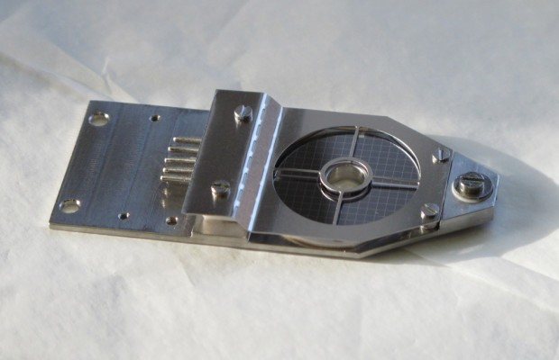

JEOL JEM-F200 Transmission Electron Microscope
A multipurpose 200 kV TEM/STEM for high-resolution imaging and analytical electron microscopy. It supports TEM and STEM modes with EDS and EELS for structural and chemical analysis at the nanoscale.

System Capabilities
The JEM-F200 supports high-resolution TEM and STEM imaging for crystallography, defects, and interfaces. Integrated analytical options enable chemical and electronic structure analysis across a wide range of materials.
Typical workflows include TEM bright-field/dark-field imaging, STEM-HAADF for Z-contrast, and spectroscopy using EDS and EELS.
Operating Modes
TEM Imaging (BF/DF)
Conventional imaging for morphology, defects, and diffraction contrast.
STEM-HAADF
Z-contrast imaging with fine probe for interface structure.
EDS Analysis
Elemental mapping and line scans for composition.
EELS
Bonding and electronic structure analysis at high energy resolution.
Technical Specifications
| Accelerating Voltage | 20 to 200 kV |
|---|---|
| TEM Point Resolution | 0.19 nm |
| STEM-HAADF Resolution | 0.14 nm |
| Magnification Range (TEM) | 20x to 2,000,000x |
| Magnification Range (STEM) | 200x to 150,000,000x |
| Analytical Options | EDS, EELS, and tomography options |
Comparison: This System vs Conventional Alternative
A high-level comparison to highlight performance and workflow advantages.
| Feature | This System | Conventional Method |
|---|---|---|
| Precision | Higher accuracy and repeatability | Standard tolerance |
| Workflow | Streamlined and automated | Manual or multi-step |
| Throughput | Faster turnaround | Slower cycle time |
Common Applications
Accessories
The following accessories expand imaging and analysis capabilities for the TEM.


Individual accessories may be available for lending, subject to availability.
To inquire about borrowing a specific accessory, please Contact
the Lab Manager.